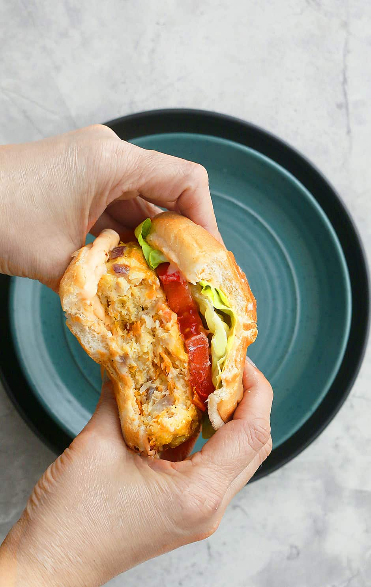

Ground Chicken Burger
These ground chicken burgers are a great addition to any cookout, and easy and quick enough to serve as a weeknight family meal. Wonderfully seasoned, they are loaded full of flavor and perfect for any summer feast!

Ingredients
- 1 pound ground chicken breast
- ½ cup Italian breadcrumbs
- 2 tablespoons mayonnaise (vegan or regular)
- 2 tablespoons minced onions
- 1 tablespoon fresh parsley
- 1 garlic clove minced
- ½ teaspoon paprika
- ½ teaspoon salt
- ¼ teaspoon black pepper
- Hamburger buns
Steps
- In a medium bowl, add ground chicken, breadcrumbs, mayonnaise, onions, parsley, garlic, paprika, salt and pepper. Use your hands to combine all the ingredients together until blended, but don’t over mix.
- Preheat grill to medium-high heat and oil the grates.
- Form the mixture into 4-6 equal patties. Press down in the middle of each patty with your thumb to ensure even cooking of the chicken burgers.
- Cook the chicken burgers on the preheated grill until the internal temperature is 165F, about 10 minutes total, flipping halfway through.
- Assemble the chicken burgers with hamburger buns and toppings of choice.
Source
https://feelgoodfoodie.net/recipe/ground-chicken-burgers/